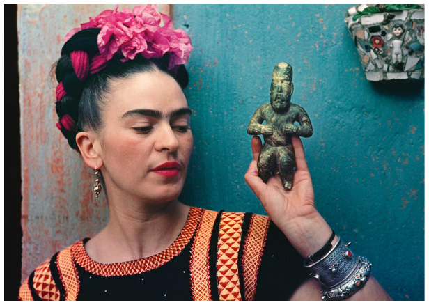

Une artiste qui a lutté toute sa vie pour les droits des femmes. Kahlo préfère s’affirmer plutôt que d’être opprimée, elle choque les mœurs mais rien n’arrêtera son côté visionnaire. Frida Kahlo ne se laisse pas faire et elle ne cessera pas de provoquer jusqu’à obtenir le respect qu'elle désire tant.
Elle affirme publiquement sa bisexualité et en est fière. Elle aime coucher avec des femmes et des hommes. Ce qui la pousse à avoir de multiples expériences sexuelles c’est que son mari, Diego Rivera, la trompe régulièrement. Le couple a finalement opté pour un mariage ouvert, ce qui était rare pour l’époque. Frida Kahlo couchait notamment avec les partenaires de son mari par exemple avec l’actrice américaine Paulette Goddard. Diego Rivera n’était pas jaloux des femmes que fréquentait Kahlo, cependant, il était extrêmement jaloux des hommes qu’elle côtoyait comme Léon Trotsky.
Les femmes avaient peu de droits dans les années 1900. À l’époque les hommes étaient qualifiés de sexe dominant et les femmes étaient censées rester à la maison. Kahlo a fait des études, ce qui était extrêmement rare pour une femme à l’époque.
Contrairement aux autres filles, Frida apparaît parfois habillée comme un homme sur les photos de famille.
Non seulement elle s’habillait comme les hommes mais elle les défiait sur les quantités de tequila qu’elle consommait. Elle continua à boire tout au long de sa vie bien que ceci ne lui fut pas recommandé, à cause de sa santé fragile.
Au XIXème siècle, les femmes ne parlaient pas de leurs expériences sexuelles, cependant Frida Kahlo parlait ouvertement de ses fausses couches, des règles, de ses opérations, du fait de nourrir un enfant au sein, d’infertilité et d’organes génitaux. Ses tableaux peuvent sembler déstabilisants au premier regard, mais ils représentent la réalité de la vie des femmes au XIXème siècle. Frida Kahlo se représente dans un style surréaliste ce qui impressionne les grands peintres de l’époque, notamment les peintres Dada comme André Breton. Ses œuvres sont directement inspirées de sa vie. Kahlo essaye d’être la plus représentative possible pour faire un travail de transfert sur les spectateurs afin qu’ils examinent leurs peurs, leurs passions et les souffrances qu’ils dissimulent.
“Il n'y avait que 5 filles pour 300 garçons dans cette école et Mathilde (la mère de Kahlo) ne supportait pas que sa fille en fasse partie".
Bien qu'elle soit née au Mexique, un pays possédant des racines catholiques importantes, Kahlo se revendique athée et communiste. Souffrant de nombreux problèmes de santé, Frida Kahlo était une membre très active du parti communiste. Elle pensait que le communisme était le régime politique le plus humain. Kahlo était également très patriote. Elle a même changé sa date de naissance qui était 1907 afin de coïncider avec celle de la révolution mexicaine en 1910. Les convictions politiques de Kahlo ont été grandement inspirées par l’idéologie Marxiste.
“Je suis convaincue que cette révolution transformera le monde en une société sans classe et libérera les opprimés”.
Elle eut même une liaison avec Léon Trotsky, le révolutionnaire marxiste exilé, qui vécut pendant 2 ans avec elle et Diego Rivera à La Casa Azul.